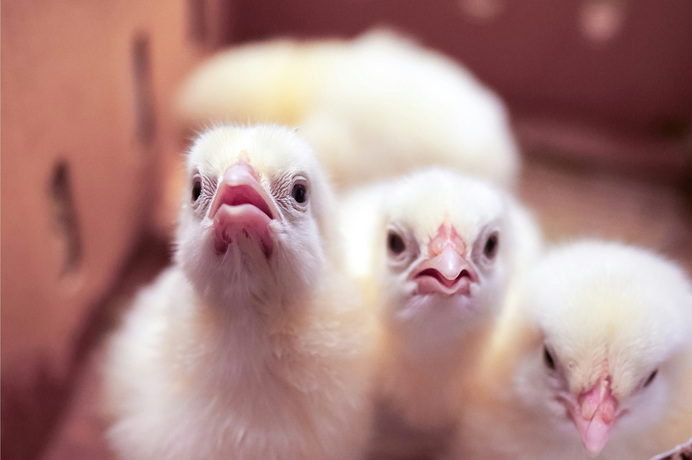

Our Offerings

Farm-Fresh Desi Eggs
Rich in protein, omega-3s, and essential vitamins. Delivered fresh across Pune.

Healthy Chicks
Vaccinated day-old chicks and growers with strong genetics and high survival rates.

Premium Parent Stock
High-quality breeding birds for farmers looking to build strong poultry lines.